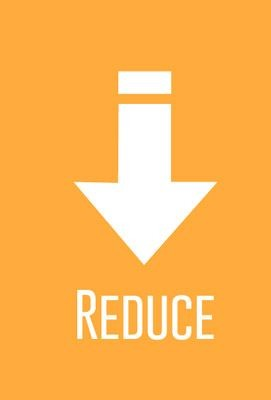
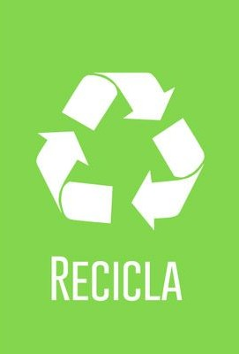

Activitats plantejades per l'ONG
La nostra ONG se centra en recollida de residus, principalment els plàstics, els nostres voluntaris operen principalment a Espanya ia més també tenim conferències on els nostres professionals consciencien la gent sobre el mal ús del plàstic. Ajuda'ns millorar l'estat del planeta, menys plàstic, més verd.
A continuació els horaris de recollida de plàstics, tant de matí com de tarda
| Dilluns | Dimarts | Dimecres | Dijous | Divendres | Dissabte | Diumenge | |
| 10:00-11:00 | Recollida de plàstics | Xerrades de concienciació | Recollida de plàstics | Xerrades de concienciació | |||
| 11:00-12:00 | |||||||
| 12:00-13:00 | |||||||
| 13:00-14:00 | |||||||
| 14:00-15:00 | Xerrades de concienciació | Recollida de plàstics | Xerrades de concienciació | Recollida de plàstics | |||
| 15:00-16:00 | |||||||
| 16:00-17:00 | |||||||
| 17:00-19:00 |
Activitats proposades pel dia a dia
Per començar proposarem l'activitat de les 3R (reduir, reutilitzar, reciclar) a la nostra vida quotidiana quant a els plàstics que fem servir, això vol dir que primer hem d'usar la menor quantitat de plàstic com pot ser en el cas de les bosses de plàstic o en el cas de les ampolles.
La següent fa referència al fet que si fem servir aquestes bosses, ampolles, gots. que els hem d'utilitzar, no generar més, ja que aquests ni en dues vides humanes arriben a degradar-se del tot i això després és un perill per a l'ecosistema ja que el malmet per generar en gran massa aquests residus.

L'última fa referència al fet que reciclem tot el plàstic acumulat a les nostres llars, perquè pugui ser reutilitzat més tard per algú més. No deixa de ser un procés de transformació perquè es pugui tornar a utilitzar aquest material.
Recol·lecció de plàstics
Aquesta activitat es basa en la recollida de plàstics, principalment a les platges, on s'allotja la major part del plàstic. La recol·lecció de faria amb les mans i els nostres voluntaris s'equiparien amb guants biodegradables i guardarien les escombraries en bosses també fetes amb plàstic fet amb el mateix plàstic que es troben, complint així amb les 3R anteriorment aquesta.

Illes de plàstics
Aquestes illes de grans dimensions i densitat es van formant a mesura que anem tirant les deixalles plàstiques a l'aigua, sobretot els que vénen dels desguassos. hem posat en circulació 8.300 milions de tones d'aquest polímer a nivell global, segons estima la Universitat de Califòrnia, i el més preocupant és que més del 70% són ara residus que col·lapsen els abocadors i els mars del planeta.